Computes and visualizes an item correlation matrix (also known as a heatmap),
offering several correlation "types" and optional clustering (with possible
cluster outlining). The function relies on ggplot2::ggplot(), providing a
high customisability using "the grammar of graphics" (see the examples
below).
Arguments
- Data
matrix,data.frameortibble: either adata.framewith scored items (as columns, one observation per row), or a correlation matrix.- cor
character: correlation "type" used to correlation matrix computation; available options are
polychoric,tetrachoric,pearson,spearman, ornone(in case you provide the correlation matrix asData).- clust_method
character: optional clustering method, available options are:
ward.D,ward.D2,single,complete,average(= UPGMA),mcquitty(= WPGMA),median(= WPGMC),centroid(= UPGMC) ornone(clustering disabled). Seehclust()for a detailed description of available options.- n_clust
integer: the number of clusters you want to be outlined. When set to zero (the default), no cluster are outlined, but items still do get sorted according to
clust_method(if not set tonone).- shape
character: tile appearance; either
circle(default) to map the correlation coefficient to circle size and color, orsquareto draw square-shaped tiles with only shade denoting the coefficient magnitude. You can use an unambiguous abbreviation of the two.- labels
logical: when
TRUE, the correlation coefficients are plotted onto tiles.- labels_size
numeric: label size in points (pts).
- line_size
numeric: cluster outline width.
- line_col
character: color of the outline, either a HEX code (e.g. "#123456"), or one of
R's standard colors (see thecolors()).- line_alpha
numeric 0-1: the opacity of the outline.
- fill
character: the color used to fill the outlined clusters.
- fill_alpha
numeric 0–1: the opacity of the fill color.
- ...
Arguments passed on to
psych::polychoriccorrectCorrection value to use to correct for continuity in the case of zero entry cell for tetrachoric, polychoric, polybi, and mixed.cor. See the examples for the effect of correcting versus not correcting for continuity.
smoothif TRUE and if the tetrachoric/polychoric matrix is not positive definite, then apply a simple smoothing algorithm using cor.smooth
globalWhen finding pairwise correlations, should we use the global values of the tau parameter (which is somewhat faster), or the local values (global=FALSE)? The local option is equivalent to the polycor solution, or to doing one correlation at a time. global=TRUE borrows information for one item pair from the other pairs using those item's frequencies. This will make a difference in the presence of lots of missing data. With very small sample sizes with global=FALSE and correct=TRUE, the function will fail (for as yet underdetermined reasons.
weightA vector of length of the number of observations that specifies the weights to apply to each case. The NULL case is equivalent of weights of 1 for all cases.
std.errstd.err=FALSE does not report the standard errors (faster) deprecated
progressShow the progress bar (if not doing multicores)
MLML=FALSE do a quick two step procedure, ML=TRUE, do longer maximum likelihood — very slow! Deprecated
deleteCases with no variance are deleted with a warning before proceeding.
max.catThe maximum number of categories to bother with for polychoric.
Details
Correlation heatmap displays selected type of correlations between items. The
color of tiles indicates how much and in which way the items are correlated
– red color means positive correlation and blue color means negative
correlation. Correlation heatmap can be reordered using hierarchical
clustering method specified with clust_method argument. When the desired
number of clusters (argument n_clust) is not zero and some clustering is
demanded, the rectangles outlining the found clusters are drawn.
Author
Jan Netik
Institute of Computer Science of the Czech Academy of Sciences
netik@cs.cas.cz
Patricia Martinkova
Institute of Computer Science of the Czech Academy of Sciences
martinkova@cs.cas.cz
Examples
# use first 20 columns from HCI dataset (the remainder are not items)
HCI <- HCI[, 1:20]
# use Pearson product-moment correlation coefficient for matrix computation
plot_corr(HCI, cor = "pearson")

if (FALSE) { # \dontrun{
# use tetrachoric correlation and reorder the resulting heatmap
# using Ward's method
HCI |> plot_corr(cor = "tetrachoric", clust_method = "ward.D")
# outline 3 Ward's clusters with bold yellow line and add labels
HCI |>
plot_corr(
n_clust = 3, clust_method = "ward.D2", line_col = "yellow",
line_size = 1.5, labels = TRUE
)
# add title and position the legend below the plot
library(ggplot2)
HCI |>
plot_corr(n_clust = 3) +
ggtitle("HCI heatmap") +
theme(legend.position = "bottom")
# mimic the look of corrplot package
plot_corr(HCI, cor = "polychoric", clust_method = "complete", shape = "square") +
scale_fill_gradient2(
limits = c(-.1, 1),
breaks = seq(-.1, 1, length.out = 12),
guide = guide_colorbar(
barheight = .8, barwidth = .0275,
default.unit = "npc",
title = NULL, frame.colour = "black", ticks.colour = "black"
)
) +
theme(axis.text = element_text(colour = "red", size = 12))
} # }